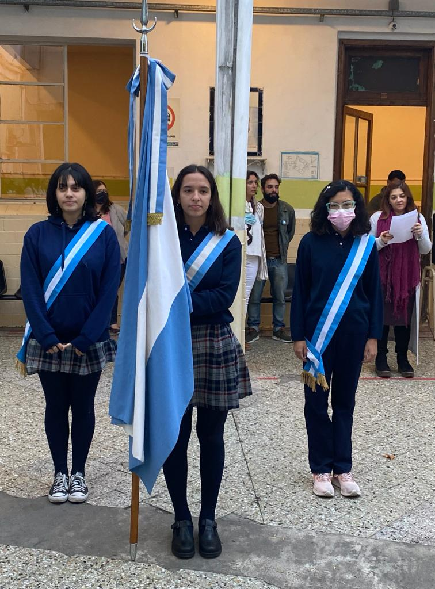
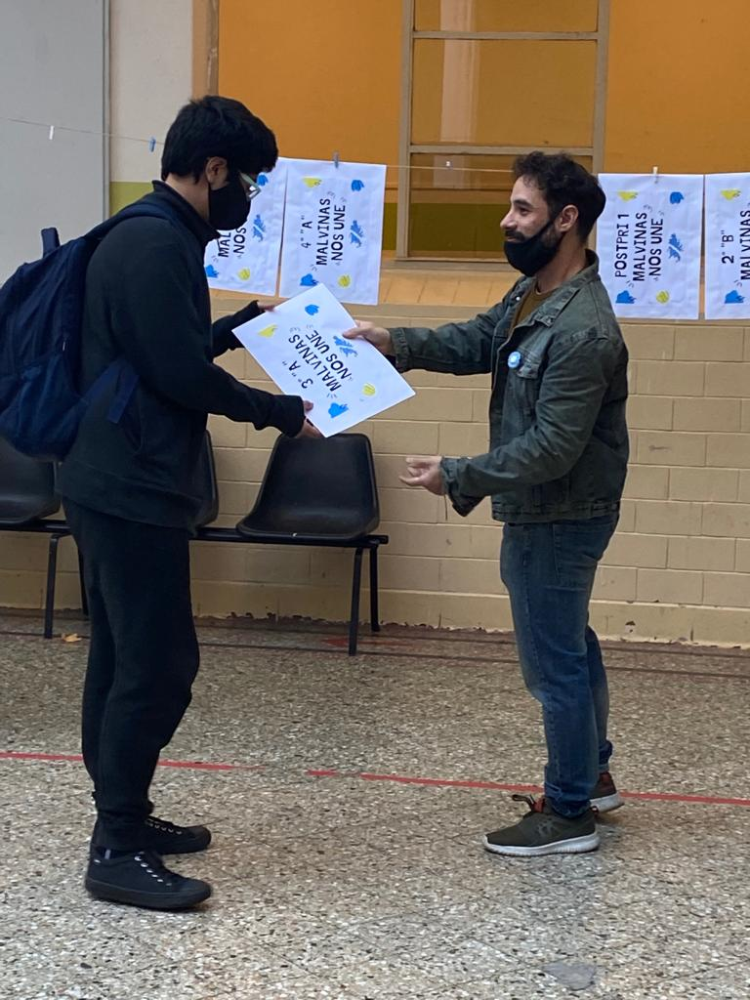
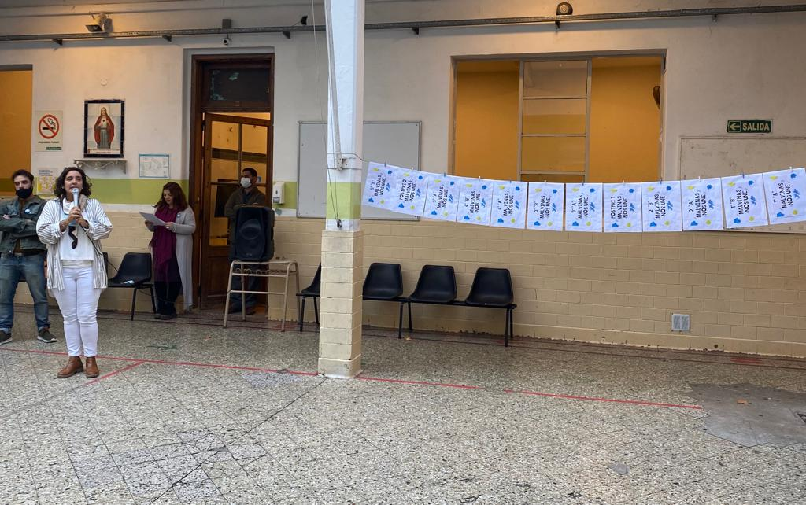

Acto del 2 de Abril- Día del veterano y de los caídos en la Guerra de Malvinas
Discurso a cargo del Prof. Fernando Héctor Fariña
Sres. Directivos, docentes y queridos alumnos:
Estamos reunidos en este acto escolar para conmemorar el día del Veterano y los Caídos en la Guerra de las Islas Malvinas.
Hace 40 años, nuestro país se embarcaba en una guerra contra el Reino Unido para recuperar el archipiélago austral.Desde 1833 las Islas Malvinas estuvieron ocupadas por los británicos y los reclamos argentinos acerca de su soberanía sobre esas tierras nunca tuvieron éxito.
En el contexto del “Proceso de Re-organización Nacional”, ejercido bajo un régimen dictatorial desde el Golpe de Estado de 1976, Argentina ocupó sus tierras usurpadas, luego de vencer a una débil resistencia británica el 2 de abril de 1982.
La reacción del Reino Unido no se hizo esperar. El 1 de Mayo, las fuerzas británicas iniciaron el bombardeo aéreo y el 2 de Mayo, la Armada de ese país hundió el crucero General Belgrano.
La guerra había comenzado.
Muchos jóvenes, algunos con apenas 18 años, que partieron a la guerra con la esperanza de convertirse en héroes y ganar el territorio perdido, dejaron su vida en el campo de batalla. Nunca regresaron.
Otros volvieron con una imagen impresa en sus ojos y una impronta imborrable en su corazón: la guerra. Una herida abierta y el recuerdo de la muerte entre sus manos. El sonido de las bombas y el miedo entre las trincheras.
Así regresaron, pero antes de que llegaran ellos, los precedió su honra, su honor, su valentía. Hoy es un día para homenajearlos, para abrazar su coraje. Hoy, no debemos olvidar lo que han hecho, sufrido y luchado por la patria.
Por otra parte, esta fecha, que conmemoramos, nos pone de cara a una realidad, que sigue latiendo en el corazón de muchos y es el anhelo de soberanía sobre las tierras de las islas. La tristeza sobre aquella porción perdida y el reclamo siempre vigente de recuperación. El sueño de un horizonte distinto aún sigue ardiendo en el interior de cada argentino y argentina. El recuerdo remueve esa esperanza que sigue viva.
Por último, no podemos evitar que nuestro pensamiento nos ubique ante la actualidad y que la historia ilumine el tiempo presente. Entonces, miramos lo que sucede entre otros países como Rusia y Ucrania. Lo observamos con la sombría tristeza y decepción de algo que sabe amargo y eso tiene un nombre la GUERRA. Algo de lo vivido, algo de lo contado por nuestros mayores resuena cuando escuchamos esa palabra y es que nada se resuelve con la muerte del otro, que en la guerra nadie gana.
Para finalizar, quisiera recordar una frase del maestro Eduardo Galeano, quien muchas veces suele ayudarme cuando me encuentro buscando entre las muchas palabras que tengo aquellas que se ajusten a la ocasión. Se las pediré prestadas. Él dice: “Las guerras mienten.
Ninguna guerra tiene la honestidad de confesar yo mato por robar. Las guerras siempre invocan nobles motivos: matan en nombre de la paz, en nombre de la civilización, en nombre del progreso, en nombre de la democracia y por la dudas, si tanta mentira no alcanzara, ahí están los medios de comunicación dispuestos a inventar enemigos imaginarios para justificar la conversión del mundo en un gran manicomio y un inmenso matadero”
Queridos alumnos, docentes y directivos, que la memoria, el recuerdo vivo de aquellos que supieron dar su vida y que nos acercaron el rostro a la cruda realidad de la guerra, nos salve de un mundo violento y hostil. Que en su valentía también podamos construir la paz y la justicia.
Muchas gracias.
  